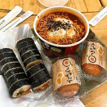
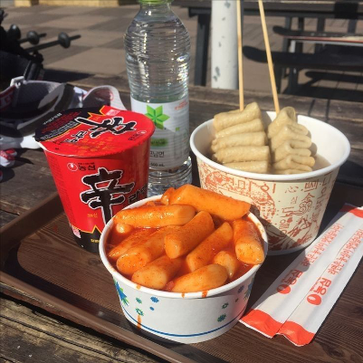

При словах «французская кухня» или «итальянская кухня» в голове сразу появляется с десяток ассоциаций. Когда
же говорят
про кухню корейскую, вспоминаются только собаки, острая морковка (которая, конечно, к стране отношения не
имеет) или, в
лучшем случае, кимчхи. Что же на самом деле едят в трендовых заведениях Сеула, из-за чего Корею называют
одним из лучших
мест для вегетарианцев и почему самое популярное шоу в стране – кулинарное?

За свою историю корейская кухня менялась много раз. Исторически, корейцы – ужасные мясоеды. Люди,
выращивающие скот для
продажи, имели высокий статус в обществе, так как кухня Кореи в основном базировалась на мясных блюдах.
Пулькоги, тонки
куски говядины в специальном соусе, даже упоминают в древнейших китайских летописях. С приходом буддизма в V
веке
популярными стали вегетарианские блюда и чайные церемонии. Набеги монголов приносили не только разрушения,
но и новые
кулинарные традиции. Именно благодаря их в меню корейских заведений есть такое блюдо, как манту (да-да,
сходства с
известными тебе мантами не случайны).
Конфуцианство, пришедшее в Корею в эпоху Чосон в 1432 году, привило населению любовь к сырой рыбе и мясу,
заставило
позабыть чай и подтолкнуло к экспериментам с рисовыми отварами. Как результат – появление знаменитой
корейской водки
соджу.
Корейская кухня в том виде, в котором она есть сейчас, окончательно сформировалась в период войны с Японией в
конце XVI
века. Японцы завезли в Корею новые фрукты и овощи, главным из которых стал красный перец. Именно благодаря
ему
большинство корейских блюд можно охарактеризовать как «остро и горячо». Но все же главная черта этой кухни –
сбалансированность. Обилие свежих овощей, сои и зелени, морепродуктов, правильные сочетания ингредиентов,
лимитированное
употребление мяса – все это делает корейскую еду еще и полезной.
Есть вне дома в Корее – обычное дело, так как цены в заведениях обычно вполне доступные. Приготовься
трапезничать с
низких столов сидя на полу. Все полы в Корее с подогревом, так что такое размещение вполне комфортно – брать
с собой
туристический коврик не нужно. В центре стола может стоять решетка-гриль или газовая горелка для
приготовления самых
разнообразных блюд. Частенько посетители готовят все сами – точнее, доводят до ума уже почти готовую
трапезу, регулируя
степень прожарки мяса и овощей.
На входе в традиционную едальню придется снять обувь. Верхнюю одежду можно сложить в сумку, которую выдадут
здесь же.
Эта мера бывает не лишней в случае, если тебе предстоит кушать самгёпсаль (корейское барбекю или попросту
жареный на
гриле бекон, который заворачивают в листья салата и едят с рисом и закусками). Это блюдо готовится на
решетке, а потому
вся твоя одежда может пропахнуть дымом. Иностранцы любят заказывать это блюдо, потому что могут всецело
участвовать в
процессе: разрезать куски мяса большими железными ножницами, жарить зубчики чеснока и перемешивать все эти
ингредиенты с
квашенной капустой кимчхи, без которой ни одна корейская трапеза не будет каноничной.

Особенность корейского меню – сет закусок к любой позиции: при заказе основного блюда тебе обязательно
принесут 5-6
закусок (панчханов), плошку риса и небольшую миску с супчиком. Приятная новость: все это пищевое
разнообразие входит в
стоимость. Закуски можно обновлять, если что-то закончилось. При этом сумма счета не будет расти, сколько бы
закусок ты
не слопал(-а). Сами корейцы съедают далеко не всё. Если нас с детства приучали «не оставлять силу на
тарелке», то
кореец, съедающий всю трапезу без остатка, в глазах своих соотечественников будет выглядеть нищебродом. У
состоятельных
корейцев принято заказывать много еды, но пробовать по чуть-чуть от каждого блюда, оставляя львиную долю еды
на
тарелках.
Почти все корейские заведения специализируются на одном-двух блюдах, и в меню не будет ничего другого.
Например, в одном
кафе подадут вкуснейший самгетхан (суп с курицей, нашпигованной рисом и женьшенем) – рабочий вариант для
тех, кто не
может есть острую пищу. В кафе же по соседству смогут крутить только манту (корейские пельмени с начинкой из
фарша, лука
и прочей зелени).
Чаевые оставлять здесь не принято, вода сразу подается на стол в кувшине бесплатно или же набирается
самостоятельно из
кулера. Еще бы они брали плату за воду! При остроте корейских блюд это был бы просто грабеж. Палочками для
еды
пользуются только металлическими, в отличие от деревянных палочек в той же Японии. Исторически эта
особенность уходит в
эпоху королевских династий, когда процветали интриги и от правителей часто избавлялись при помощи ядов,
подсыпая их в
еду. Поэтому королевские особы использовали серебряные палочки для еды, так как серебро реагирует на яды и
позволяет
вовремя заметить опасность. Бедняки не могли позволить себе приборы для еды из серебра, поэтому
изготавливали палочки из
других, более дешевых металлов. Эпоха отравителей канула в лету, а металлические палочки остались.